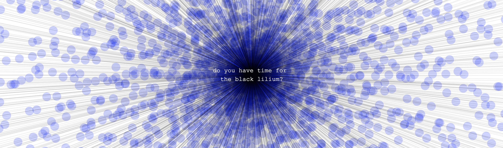

uno studio generativo sul web
t h e t r i c l i n i u m d e s i r e
Alberto Barberis / generative web audio coding
2018

introduzione e concetto
1 . t h e t r i c l i n i u m d e s i r e
dettagli tecnico-compositivi
/**
* thetricliniumdesire
* 2018
*
* web audio generative studio
* Alberto Barberis
*/
// variabili globali
let vs1=[];
let vs2=[];
let vs3=[];
let vs4=[];
let song;
let durata;
let filterLP;
let filterBP;
let delay;
let delayTime=0;
let delayFreq=0;
let statoV1vsV3=false;
let statoV4vsV3=false;
function preload(){
soundFormats('mp3');
// carico il file della traccia su cui effettuerò il DSP
song= loadSound("thetricliniumdesire.mp3");
}
// funzione che si occupa di creare i div che mi servono e popolarli
function creaDiv(){
let div1=document.createElement("DIV");
div1.id="div1";
let div2=document.createElement("DIV");
div2.id="div2";
let div3=document.createElement("DIV");
div3.id="div3";
let t1=document.createTextNode(" t h e t r i c l i n i u m d e s i r e ");
div1.appendChild(t1);
let t2=document.createTextNode("Alberto Barberis");
div2.appendChild(t2);
document.body.appendChild(div1);
document.body.appendChild(div2);
}
function setup(){
createCanvas(windowWidth,windowHeight); // creo il canvas delle dimensioni della finestra del browser
masterVolume(0.); // impongo il volume a zero
song.loop(); // la traccia va in loop
song.disconnect(); // disconnetto la traccia dal master out per poter passare solo dagli effetti;
filterLP = new p5.BandPass(); // creo un'istanza di un filtro passa basso
filterBP = new p5.BandPass(); // creo un'istanza di un filtro passa banda
// dati di setup dei filtri
filterLP.freq(0);
filterLP.res(5);
filterBP.freq(0);
filterBP.res(50);
// connetto le istanze dei filtri alla traccia
song.connect(filterLP);
song.connect(filterBP);
delay = new p5.Delay(); // creo un'istanza di un delay
delay.process(song, delayTime, 0.2, delayFreq); // dati di setup del delay
creaDiv(); // chiamo la funzione che crea i div che mi servono
masterVolume(1.0, 10, 0); // fade in del master volume
}
// funzione draw
function draw(){
background(255); // colore di background
/* ======================
WHITE NOISE DI BACKGROUND
====================== */
stroke("rgba(0,0,0,0.25)"); // colore del white noise
strokeWeight(0.5); // spessore del white noise
if(vs2.length>width*0.99) vs2.splice(0,1); // sposto di una posizione i dati nella matrice se ho raggiunto il bordo
vs2.push(random()*height); //inserisco nella matrice un valore random di altezza
// disegno una shape che segue un percorso randomico
beginShape();
for(let x in vs2){
vertex(x,vs2[x]);
}
endShape();
/* ==========================
LINEA 1 - controllo sul volume
============================= */
stroke("rgba(0,0,255,0.15)"); // cambio il colore per la prima linea blu, quella più chiara
strokeWeight(3); // spessore linee blu
if(vs1.length>width*0.33) vs1.splice(0,1);
let n1 = frameCount*0.004; // contatore per il Perlin Noise; variazione maggiore
let yVolume1=0;
vs1.push(noise(n1)*height); // riempio la matrice
for(let x in vs1){
if(x>=0 && (x-1)>=0 && (vs1[x-1])>=0 && (vs1[x])>=0){
line(x-1,vs1[x-1],x,vs1[x]); // disegno una linea
}
}
yVolume1=vs1[vs1.length-1];
/* ==========================
LINEA 4 - controllo sui filtri
============================= */
stroke("rgba(0,0,255,0.15)");
if(vs4.length>width*0.66)
vs4.splice(0,1);
let n4 = frameCount*0.0015;
let yVolume4=0;
vs4.push(noise(n4)*height);
for(let x in vs4){
if(x>=0 && (x-1)>=0 && (vs4[x-1])>=0 && (vs4[x])>=0){
line(x-1,vs4[x-1],x,vs4[x]);
}
}
yVolume4=vs4[vs4.length-1];
/* ==================================================
LINEA 3 - controllo sulla velocità di lettura del file
===================================================== */
stroke("rgba(0,0,255,0.35)");
if(vs3.length>width*0.99)
vs3.splice(0,1);
let n3 = frameCount*0.00015; // variazione minore tra tutte e 3 le linee
let yVolume3=0;
vs3.push(noise(n3)*height);
for(let x in vs3){
if(x>=0 && (x-1)>=0 && (vs3[x-1])>=0 && (vs3[x])>=0){
line(x-1,vs3[x-1],x,vs3[x]);
}
}
yVolume3=vs3[vs3.length-1];
/* ==================================================
DSP - usando i parametri di posizione della linea
===================================================== */
song.setVolume(map(yVolume1,windowHeight,0,0.0,1.));
song.rate(map(yVolume3,windowHeight,0,0.8,2.));
let LPFreq = map(yVolume4,windowHeight,0.0,20.0,2000.0);
filterLP.freq(LPFreq);
filterBP.freq(map(yVolume4,windowHeight,0.0,LPFreq,8000.0));
filterBP.res(map(yVolume4,windowHeight,0.0,50,0));
/* ==================================================
CHECK COLLISION con la linea 3 (la più lenta)
===================================================== */
let actualStatoV1vsV3;
if(yVolume1< yVolume3){
actualStatoV1vsV3=false;
}
if(yVolume1>yVolume3){
actualStatoV1vsV3=true;
}
if(actualStatoV1vsV3!=statoV1vsV3){
// configuro i dati di delay e lo collego alla traccia
delayTime=0.2;
delayFreq=5000;
statoV1vsV3=actualStatoV1vsV3;
} else {
delayTime=0;
delayFreq=0;
}
let actualStatoV4vsV3;
if(yVolume4< yVolume3){
actualStatoV4vsV3=false;
}
if(yVolume4>yVolume3){
actualStatoV4vsV3=true;
}
if(actualStatoV4vsV3!=statoV4vsV3){
console.log("cambio stato");
delayTime=0.5;
delayFreq=8000;
statoV4vsV3=actualStatoV4vsV3;
} else {
delayTime=0;
delayFreq=0;
}
/* ==================================================
DISEGNO DUE LINEE NERE
===================================================== */
stroke("rgba(0,0,0,1)");
strokeWeight(0.3);
line(width*0.33,yVolume1,width*0.99,yVolume3);
line(width*0.66,yVolume4,width*0.99,yVolume3);
}
